Účastníci
Koho na Ventu potkáš?
Pavel Kwaki Šenkyřík
180. oddíl Veneta
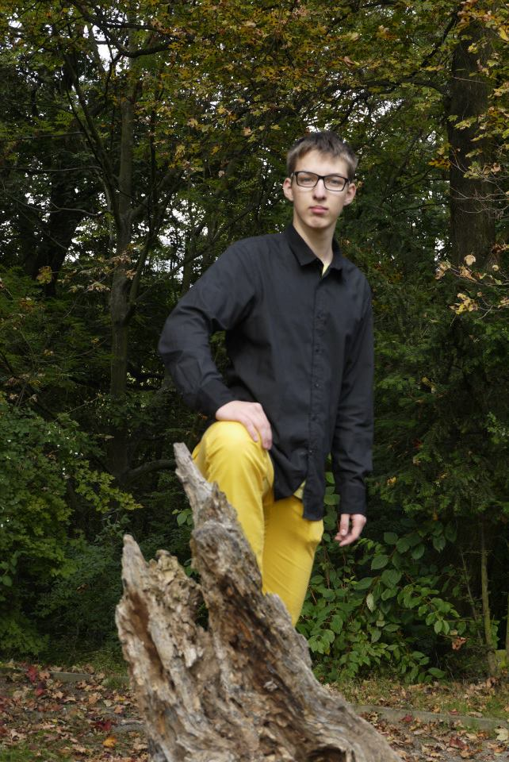Jmenuji se Pavel je mi 20 let a vedu chlapecký 180. oddíl Veneta. Do skauta chodím 10 let a skauting se pro mě stal součástí mého života. Mezi mé ostatní zájmy patří sledování seriálů, hraní a dokonce i nějaká ta práce na počítači, čtení knih a nějaký ten rekreační sportík. Letos začnu studovat Přírodovědeckou fakultu UK.
{kind=link}
Michal Jumper Osmanov
145. oddíl Naděje
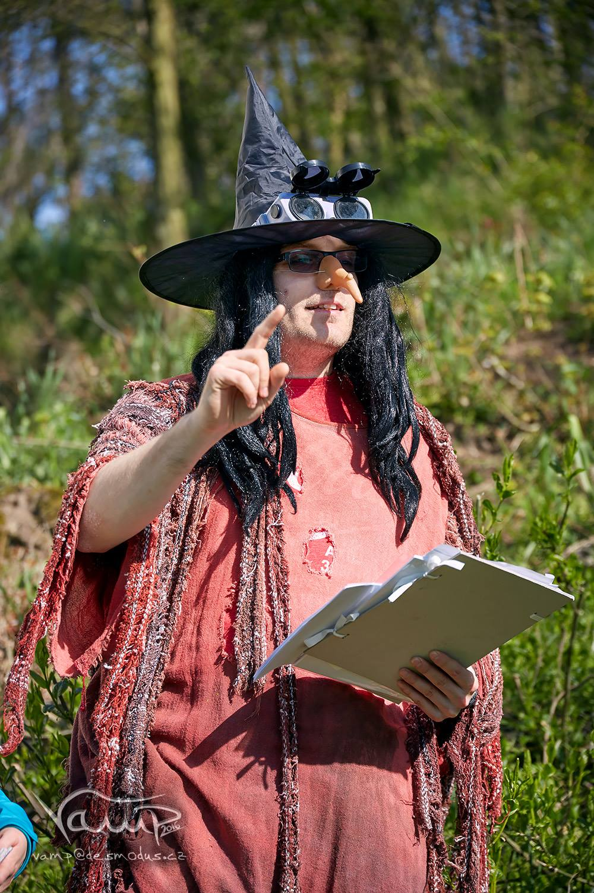"Nic není nemožné, stačí mít naději!"
Nazdar! O skauting jsem se se zajímal nevědomky od dětství, ale oficiálně jsem vstoupil do organizace cca v roce 1994 v pražském středisku 5. květen Radotín, kde jsem si prošel cestu od vlčete k ""vedoucímu"" skautského oddílu. Po osmileté pauze jsem se před 2 lety vrátil do služby a to vstupem do střediska 34. Ostříž Praha, kde do současnosti působím jako zástupce vedoucího 145. oddílu skautů Naděje.
Jsem spíše technik, ale v posledních 10 letech se věnuji obchodu a v současné době jsem obchodní zástupce na specializovaný software pro výrobní firmy, konkrétně se věnuji oblasti automotive, takže se svými klienty zlepšujeme například emise u aut, prodlužujeme životnost jednotlivých dílů a vyvíjíme elektromobily.
V osobním volnu (a je ho při oddíle poměrně málo :-) ) se snažím věnovat tvorbě videí, sportu (vše kromě plavání), vaření a nejraději mám českou krajinu.
{kind=link}
Lucie Šmoula Schwarzová
120. oddíl Miriklo
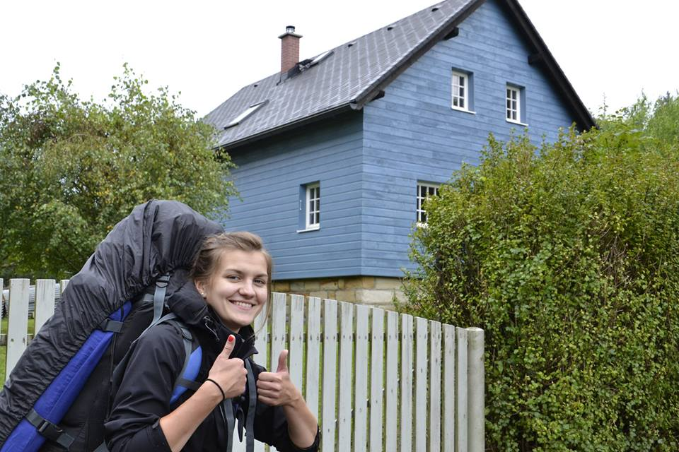Mým domovským střediskem je od mých 5 let 52. středisko Stopaři z Prahy 8, pod které také spadá oddíl skautek Miriklo, který vedu čtvrtým rokem. Momentálně studuji prvním rokem obor Ekonomie a finance na IES FSV UK. Celý rok se většinou těším na tábor a hlavně na přípravu CTH.
Hraju na klavír, mám ráda tanec, Haribo medvídky a ráda chodím na puťáky. Baví mě péct dorty a sledovat aktuální sportovní akce.
{kind=link}
Martina Svobodová
5. oddíl Pomněnky
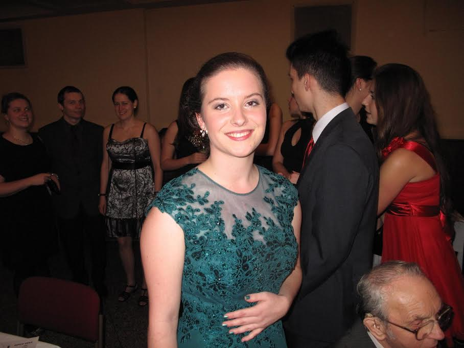Ahoj! Jsem vedoucí 5. oddílu skautek Pomněnek. Do skauta jsem nastoupila poměrně pozdě, v roce 2012, takže už teď jsem vedoucí déle, než jsem kdy byla ""jen"" skautkou. :D
V civilním životě mě můžete od letoška potkat na fyzioterapii na ČVUT nebo třeba v nemocnici, kde dělám dobrovolníka. Věřím, že na Ventu získám nejenom dovednosti k vedení oddílu ale i nové kamarády! :)
{kind=link}
Gabriela Borovcová
29. oddíl Berušky
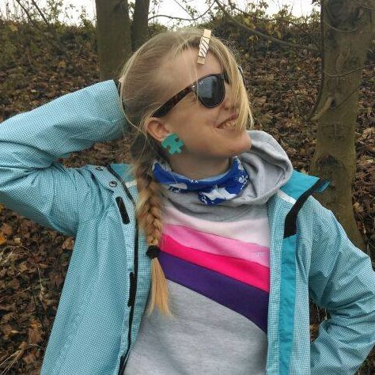Do skauta chodím už nějaký ten pátek. Nejdříve jsem vedla světlušky, a když dorostly do skautského věku, tak jsem se holek nechtěla vzdát a rozhodla jsem se je vést dál a proto momentálně vedu skautky.
Jinak jsem studentkou Karlovy Univerzity (nevím jak ještě dlouho :-D) a pocházím z Prahy.
Dost překvěpivě mezi moje záliby patří skauting. Ale kromě toho taky ráda sportuju, střílím nebo jen tak lenoším.
{kind=link}
Karolína Kája Brabcová
24. oddíl skautek
 Narodila jsem se do skautské rodiny a tak bylo nejspíš i mým osudem, že jednou budu do skauta chodit i já.
Narodila jsem se do skautské rodiny a tak bylo nejspíš i mým osudem, že jednou budu do skauta chodit i já.
Oficiálně chodím již dvanáctým rokem, devátým rokem do současného střediska. Letos začínám vést dívčí oddíl skautek.
Mám ráda sport (všech druhů), dobré (a zdravé) jídlo, zábavu, přátele a rodinu. Jsem moderní člověk, co se neobejde bez mobilu a ostatních vychytávek, ale na druhou stranu ráda vypadnu někam do přírody a vychutnávám si její krásu a klid.
Jitka Vondrášková
49. oddíl Lumturo
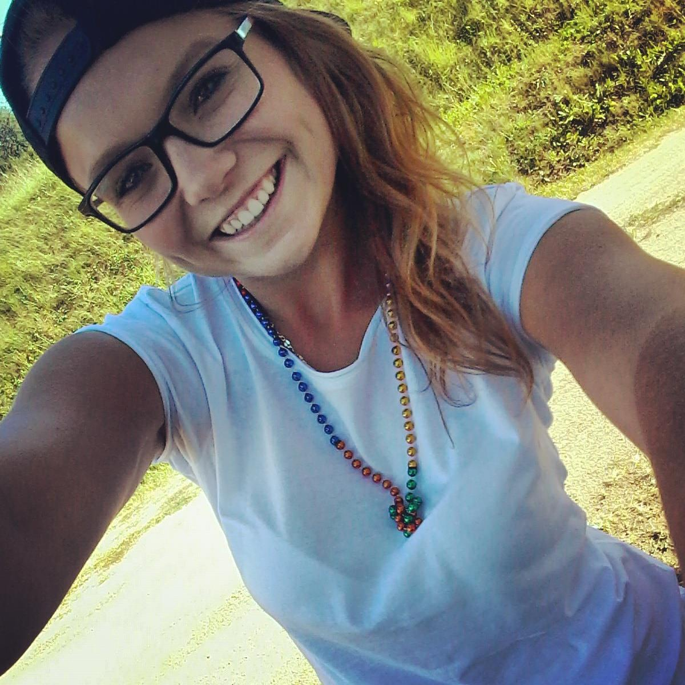Jmenuji se Jitka a studuji Sociální pedagogiku v Praze. Pocházím od Příbrami, žiji v Praze.
Pracuji v nízkoprahovém klubu YMCA. Věnuji se skautingu přes 13 let, vedu 5.rokem skautky.
Baví mě hraní na kytaru, dobrá hudba k poslechu a k tancování, kulturní zážitky všeho druhu, psaní básniček atd.
{kind=link}
Václav Véna Malý
10. oddíl Bílá Hvězda
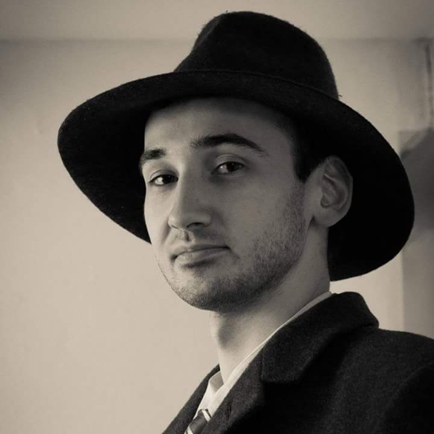
U nás ve středisku mám na starosti rovery, ale reálně nejvíc řeším táborové hry nebo výpravy. Baví mě například deskovky a larpy, ale samozřejmě i zpívání u kytary a chození po horách. Vůdcovky beru jako výzvu a těším se co se naučím.
{kind=link}
Milan Ještěr Winkler
Dvojka Staré Město
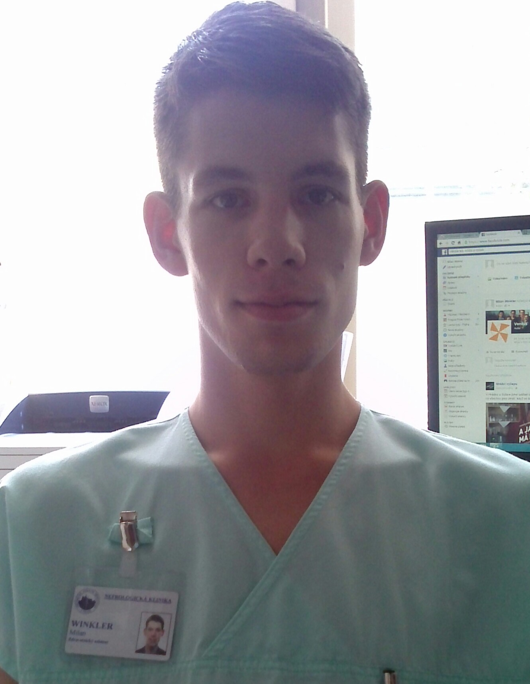
Jsem skautem od 7 let. Poslední dva roky na VŠZ nemám už tolik kontaktu s vedením vlčat/skautů. Od vůdcovského kurzu čekám inspiraci pro můj další rozvoj. A taky budu moct být oficiální vedoucí tábora. :)
{kind=link}
Kristina Bardová
Medvíďata
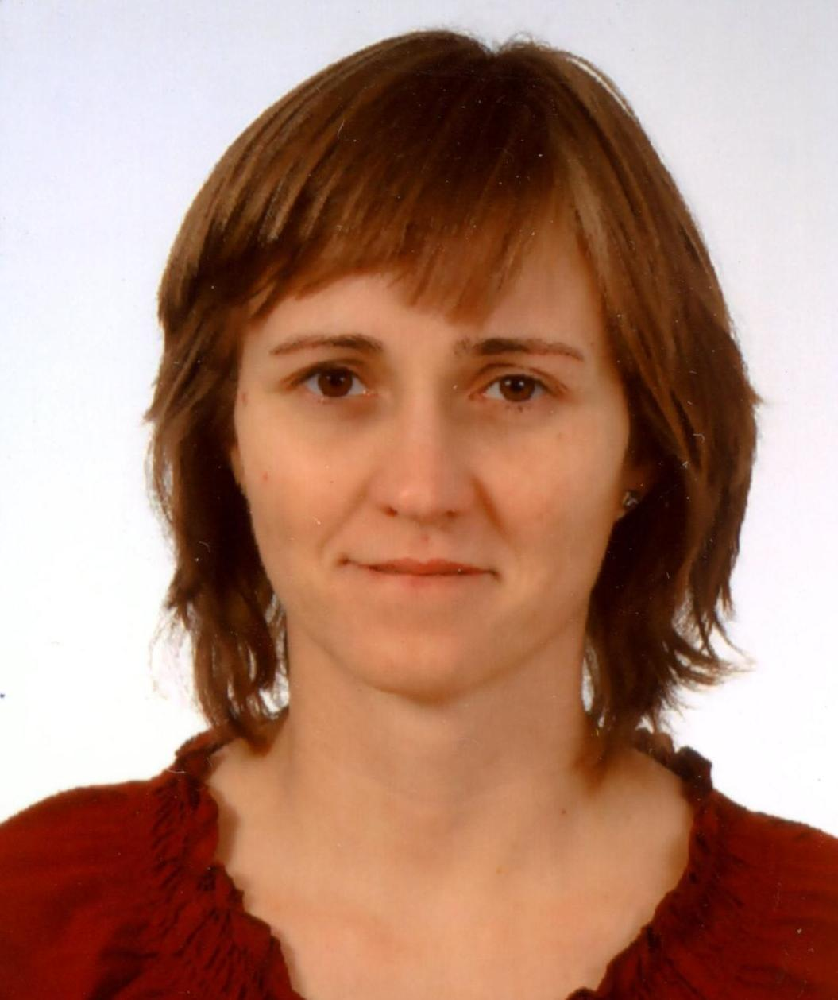
Jsem máma tří dětí, léta pomáhám s vedením předškolních skautů v Ohrobci a chtěla bych tu také založit světluškovský oddíl. Vystudovala jsem biologii a jako molekulární biolog i pracuji.
{kind=link}
Jan Citrón Holeček
Medvíďata
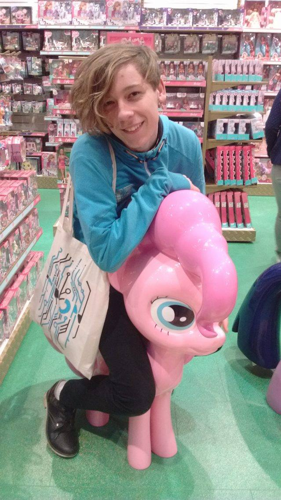
Ahoj, jmenuji se Jan Holeček a přezdívku mám Citrón, do skauta chodím už od svých 6-ti let. Jsem z oddílu Araneus na Praze 7. Momentálně vedu mladší vlčata. Po maturitě bych chtěl jít studovat psychologii. Mám rád sci-fi a elektronickou hudbu.
{kind=link}
Tomáš Kubín
1. Skautský oddíl Tvarožná
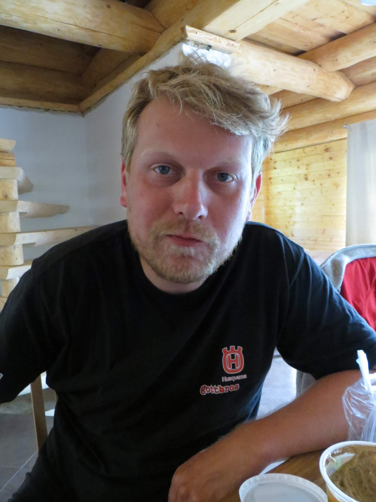
Použiju citát z jednoho hezkého českého filmu „Když je někdo jedinej, kdo to může udělat, tak musí."
{kind=link}
Barbora Klíště Žentelová
roveři, středisko Kruh
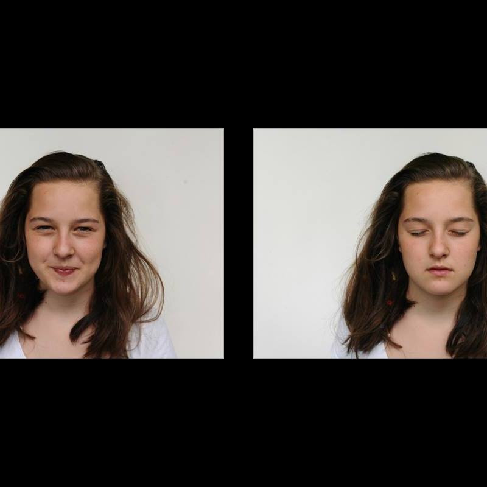
Vedu už třetím rokem vlčata, je to docela sranda, protože to mělo být spíš dočasné řešení. Všichni mi říkají spís Barčo než Klíště, což mi vůbec nevadí. Ráda tancuju a taky horolezim a pak spoustu dalších věcí. Jsem zvědavá co nás čeká a jestli potkám nějaký suprácký nový rovery!
{kind=link}
Jan Blešák Blecha
Bílí vlci (odd. č. 3 - vlčat)
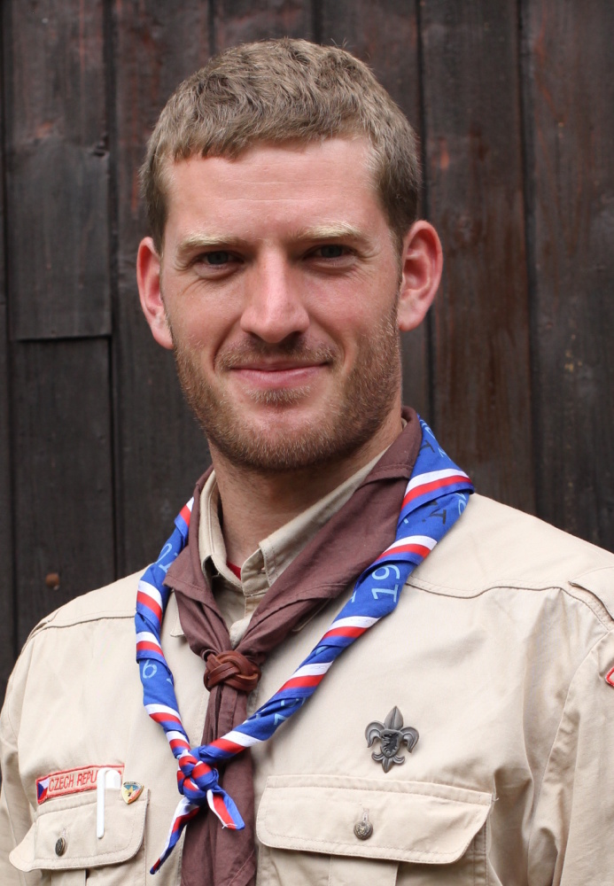
Skauting málo bere a hodně dává, a proto ho mám rád :-)
V Novém Strašecí, kde jsem skautem, jsem vystudoval gymnázium a potom VŠE v Praze. Teď většinu času trávím v kanceláři nebo na jednáních; celý den s počítačem a telefonem po ruce. Rád čtu, ve volných chvílích se také věnuji folkloru, poznávám nové lidi a občas si zkusím i nějakou výzvu. Z barev mám nejraději modrou, z hudby všechno možné a na táboře jsem si rád zkusím něco postavit, uvařit i připravit program pro družinu či oddíl. Zbožňuji oheň, jeho přípravu, opracovávání a štípání dřeva. Píšu to rychle a od srdce, tak jenom doufám, že to trochu dává smysl. Odpovědnost za případné gramatické chyby přenechám MŠMT. Blešák
{kind=link}
Karolína Kája Kubíčková
97. Oddíl Letorost
 Ahoj, jmenuji se Kája je mi 19 let a už tři roky aktivně působím u oddílu mladších dětí (6 -10 let). Od září jsem zástupce vůdce, a proto bych si chtěla dodělat vzdělání a nabrat novou inspiraci. :) Mezi mé další zájmy patří dějepis, vaření a čtení detektivek. Letos jsem začala studovat chemii na VŠCHT.
Ahoj, jmenuji se Kája je mi 19 let a už tři roky aktivně působím u oddílu mladších dětí (6 -10 let). Od září jsem zástupce vůdce, a proto bych si chtěla dodělat vzdělání a nabrat novou inspiraci. :) Mezi mé další zájmy patří dějepis, vaření a čtení detektivek. Letos jsem začala studovat chemii na VŠCHT.
Vojtěch Vorel
1 - Cassiopeia
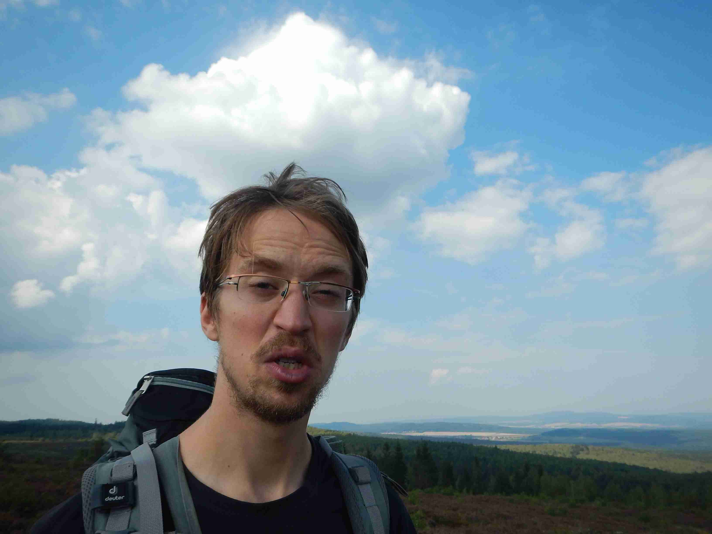
V našem malém oddíle Cassiopeia pracuji už léta, hlavně s družinou malých i velkých kluků. Je toho na mě čím dál víc, ale do všeho se pouštím s nadšením. Také funguji jako org a hospodář na pravidelném rádcáku Lavina a chystal jsem leccos pro roverský kmen PARS. Mám za sebou ČLK Odyssea z roku 2008.
Na děti se snažím působit osobním vzorem srozumitelného a konzistentního člověka, ke kterému mohou mít důvěru. K tomu jsou potřeba společné zážitky z reálného světa.
Jsem doktorandem na matfyzu v Praze - zkoumám, jak rychle a spolehlivě mohou fungovat počítačové programy.
{kind=link}
Ondřej Pidi Šinágl
180. oddíl Veneta
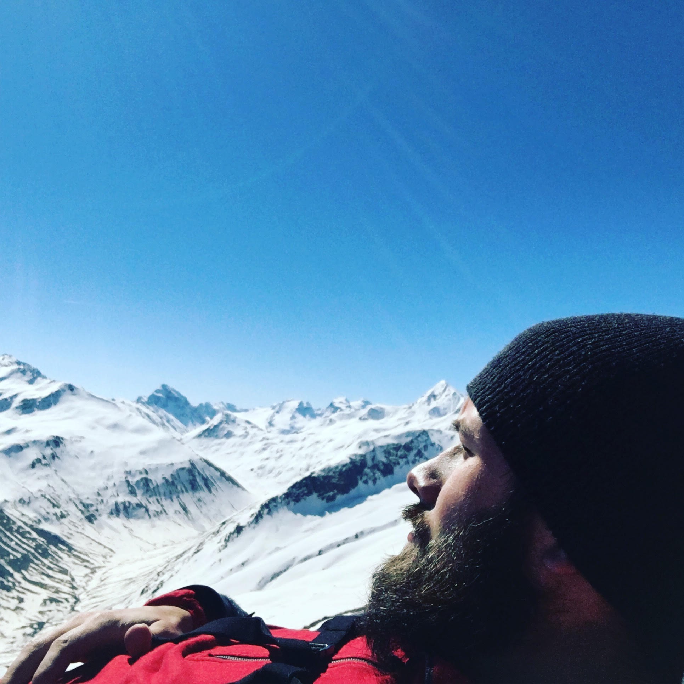
Ahoj, mé jméno je Pidi. Nestuduji, pracuji. Zbytek si raději řeknem.
{kind=link}
Zuzana Klik Blažková
18. středisko Kruh
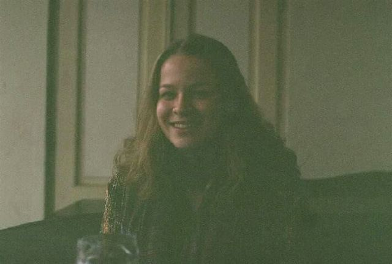
Vedu dva roky světlušky, původně jsem chtěla vést skautky, ale bylo málo lidí ve vedení. Nakonec sem ráda, že to tak dopadlo, protože mě to začlo hrozně bavit. Svojí přezdívku nemám moc ráda, většina lidí mi říká Zuzko. V oddíle trávim spoustu času s moc fajn lidma, tak doufám, že tu potkám další a něco se naučim.
{kind=link}
Zuzana Žužu Tomaščinová
12ka
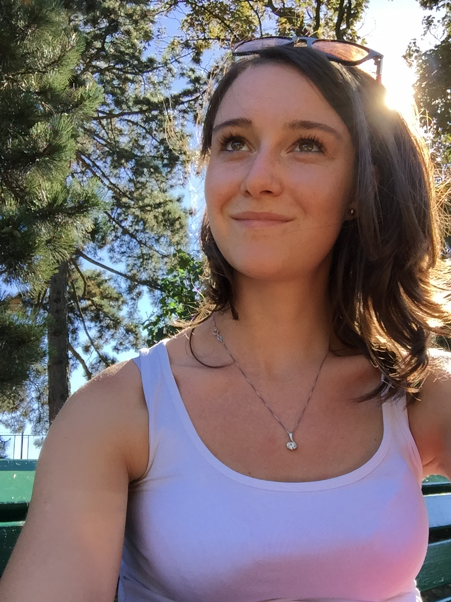
Ahoj! Jmenuju se Zuzka, někdy Žužu. Baví mě můj život - v létě cestuju a v zimě lyžuju a ještě mi to vydělává. Do toho studuji na ČVUTu teď prvním rokem magisterského studia. Když mi zbývá čas starám se o holčičky ve středisku Platan. Uvidíme se!
{kind=link}
Jan Thorin Kolomazník
RR kmen Polena
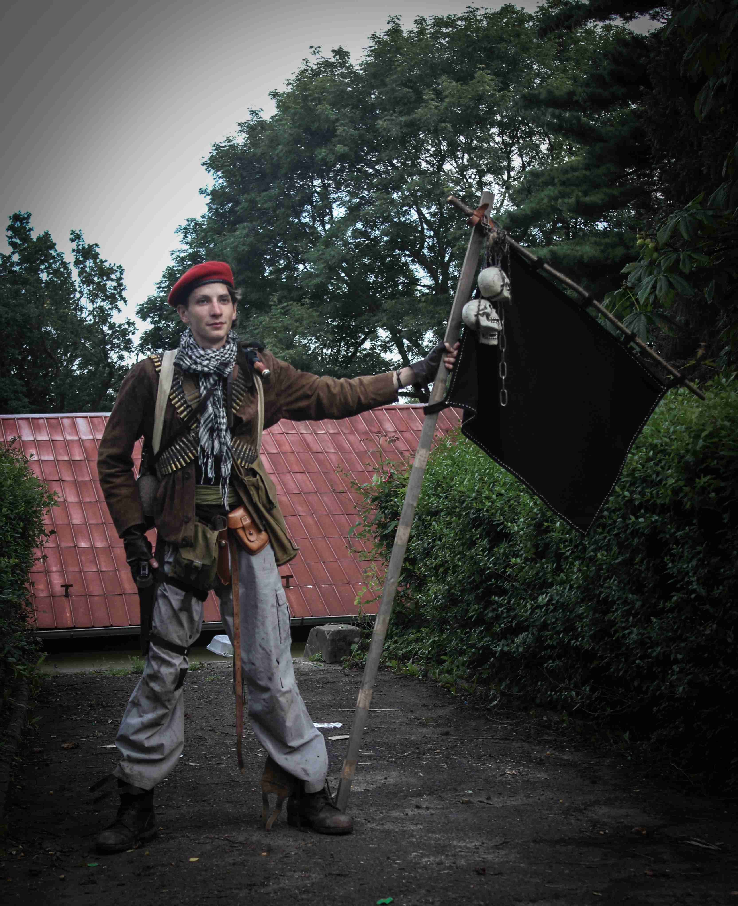
Ahoj! Říká se mi Thorin, je mi dvacet a vedu roverský kmen 27. střediska Oheň v Horních Počernicích. Jsem (už podruhé) v prváku na vejšce, na geografii a dějepisu na pěďáku/přírodovědecký UK. V současnosti mě baví nejvíc turistika (vysokohorská i tramping), airsoft a fotografování, občas se vracím k dřívějším zábavám jako je speleologie, horolezectví a historický šerm/LARPy. Když mám čas na sebe, tak si rád zahraju na počítači, přečtu brakovou knihu a poslechnu hudbu. Když mám času hodně, tak mizím na expedice po evropských fortifikacích.
{kind=link}
Martin Řízek Řehák
2. smečka vlčat
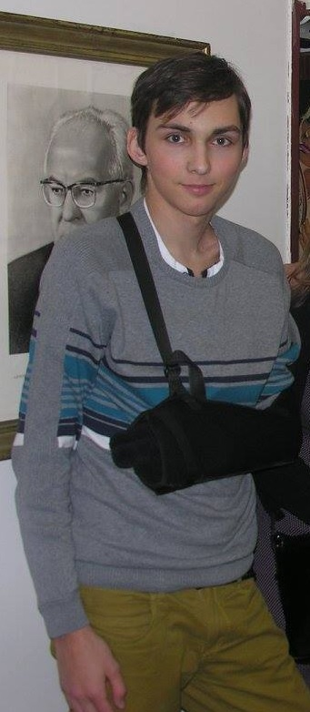
Zdar i sílu, (najdeš v sýru, že?) jsem z Orlických hor (taková skoroMorava a skoroPolsko) a i přes velký zájem o psychologii studuji pedagogiku v Mechově. Před dvěma lety jsem měl vážnou dopravní nehodu a některá má zranění jsou trvalá, tak se mě nelekněte. Ale Geoffrey de Peyrac je hezčí. Tato zkušenost mi dala úplně jiný pohled na svět. Takže jsem dost happy a celkově se snažím být pozitivní, takže kdybych se Vám zdál divnej, doktora Chocholouška asi nevolejte. No víc si radši řekneme osobně. Budu se na Vás těšit.
Řízek"
{kind=link}
Tomáš Vysílačka Vančura
13. oddíl LARKWEI
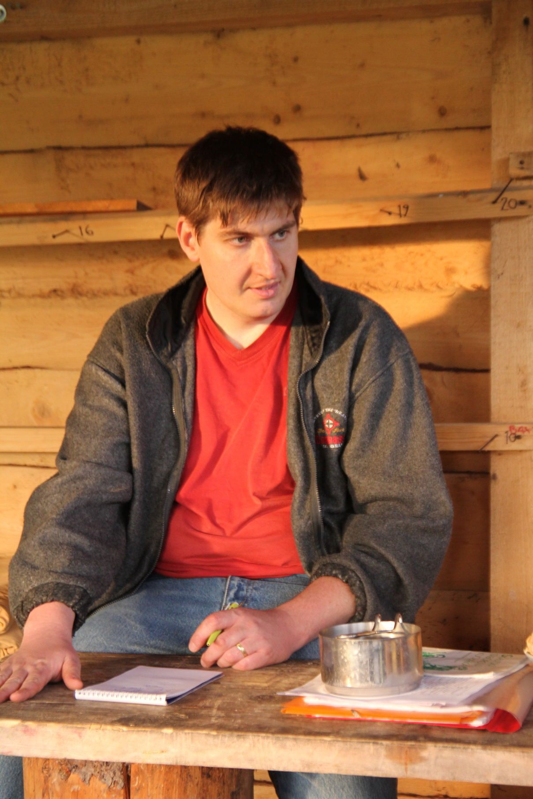
Ahoj jsem Vysílačka, jako malá Vysílačka jsem byl všude slyšet a jako velká Vysílačka jsem všude vidět... Pamatuju si svůj první den ve skautu - 20. ledna 1990 a doufám, že ten poslední ještě dlouho nepřijde, navíc když se člověk připlete k vedení stále se rozrůstající se táborské Třináctky.
{kind=link}
Magdaléna Karlíčková
Omaha Radnice
 Má role v našem středisku momentálně spočívá ve vedení družiny benjamínků, která funguje druhým rokem. Pracuji jako učitelka v MŠ. Ve volném čase nejraději beru bágl na záda a mizím někam do lesů. Ráda muzicíruju, trochu šiju, zahradničím, ..., kolo, běžky, koloběžky,.... Toho, co mě baví, je asi nespočet...
Má role v našem středisku momentálně spočívá ve vedení družiny benjamínků, která funguje druhým rokem. Pracuji jako učitelka v MŠ. Ve volném čase nejraději beru bágl na záda a mizím někam do lesů. Ráda muzicíruju, trochu šiju, zahradničím, ..., kolo, běžky, koloběžky,.... Toho, co mě baví, je asi nespočet...
Vojtěch Kozel Juran
92. Vatra
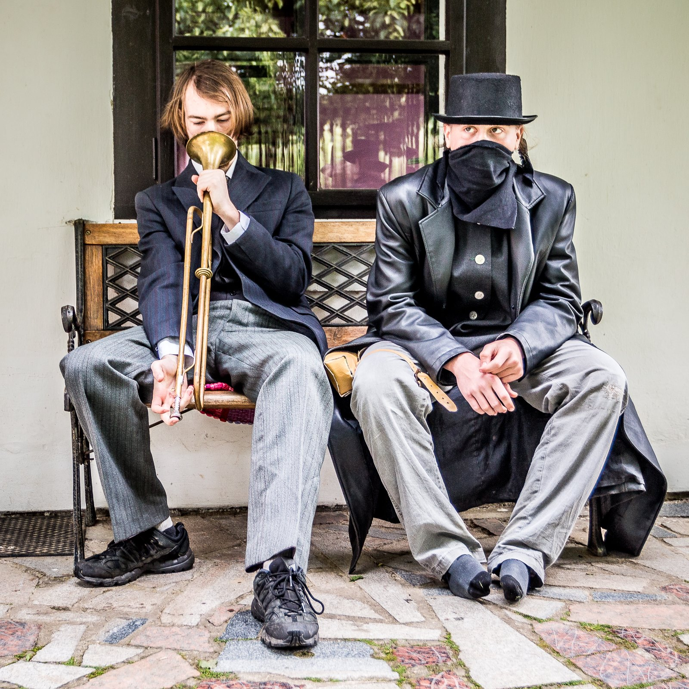
Nazdar, jsem již třetím rokem vedoucím v oddílu skautů. Druhým rokem plním funkci hospodáře a zástupce vůdce oddílu. Když zrovna nechodím do školy, což je v současnosti VŠCHT v Praze, nebo nedělám nic pro své středisko, tak hraji na violu, nebo sportuji. Doufám, že na tomto kurzu potkám další skvělé lidi a získám inspiraci pro další zkvalitňování mé práce vedoucího. Kozel (na fotce vlevo)
{kind=link}
Jiřina Špunt Manková
Keya
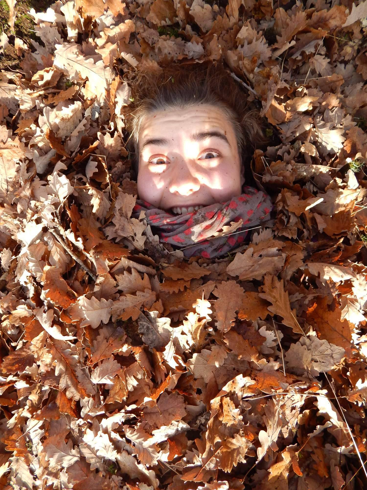
Jsem taková malá holka, která mívá hodně energie. Studuji andragogiku na fildě v Praze, pracuji v divadle Archa a taky dělám spoustu skautských věcí, od světlušek, přes oddíl a středisko až k roverským kurzům. Ráda lezu a chodím do kina, ale bohužel mi ani na jedno poslední dobou nezbývá čas.
{kind=link}